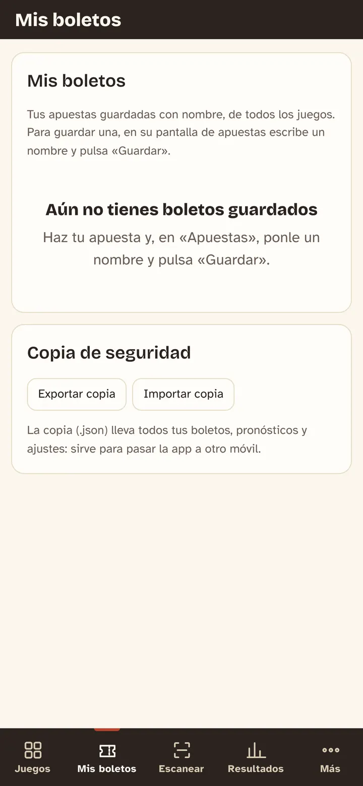

Mis boletos y copia de seguridad
App independiente. Combinario no es oficial ni tiene relación con Loterías y Apuestas del Estado (SELAE). No vende apuestas: solo te ayuda a prepararlas, y se validan y se pagan en un punto de venta. Solo para mayores de 18 años.
- Guardar: después de calcular, en Apuestas escribe un nombre («Peña del jueves») y pulsa «Guardar». Aparece en Mis boletos.
- Copia de seguridad: en Mis boletos, «Exportar copia» guarda todo en un archivo; «Importar copia» lo recupera, por ejemplo en un móvil nuevo.
- Importar apuestas: en Más › «Importar apuestas» pegas o abres un TXT o CSV con apuestas. Puedes quitar las que no pasen tus filtros.
- Juntar o comparar (Quiniela y Quinigol): compara tus columnas con otra apuesta guardada o con un archivo.

Todo se guarda solo en tu móvil. Si borras la app sin exportar la copia, se pierde.